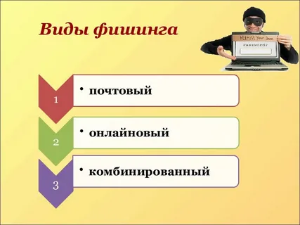
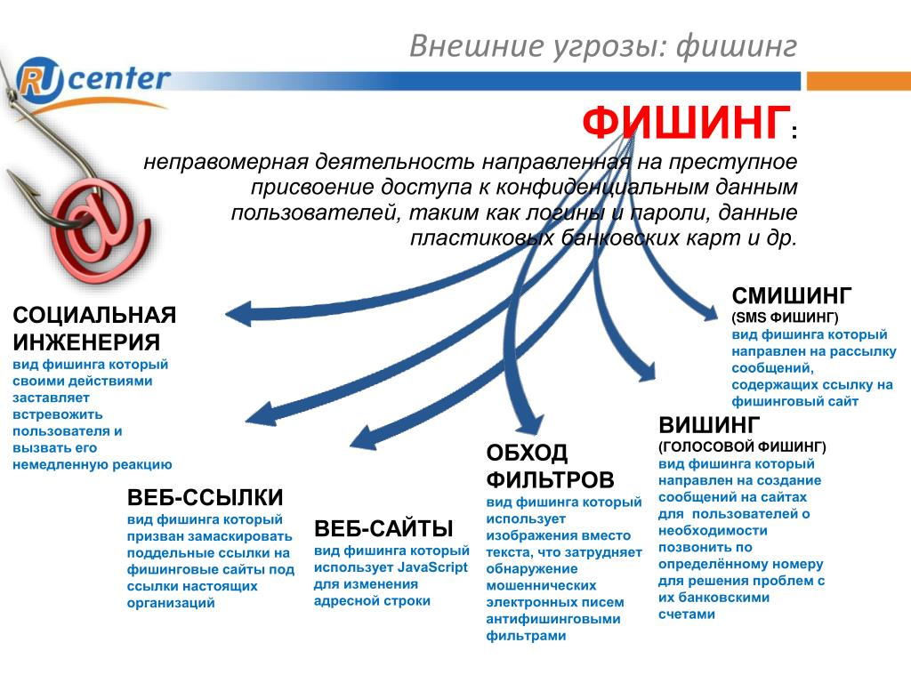
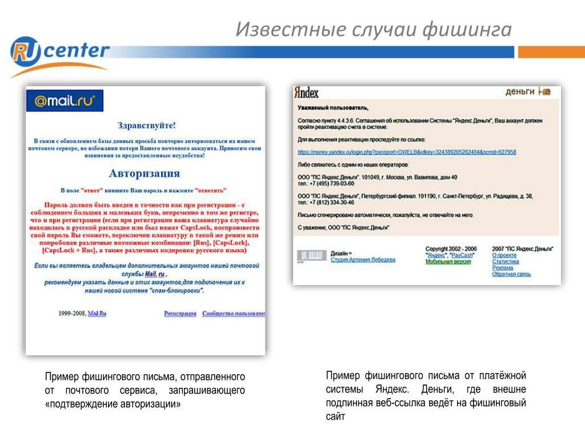
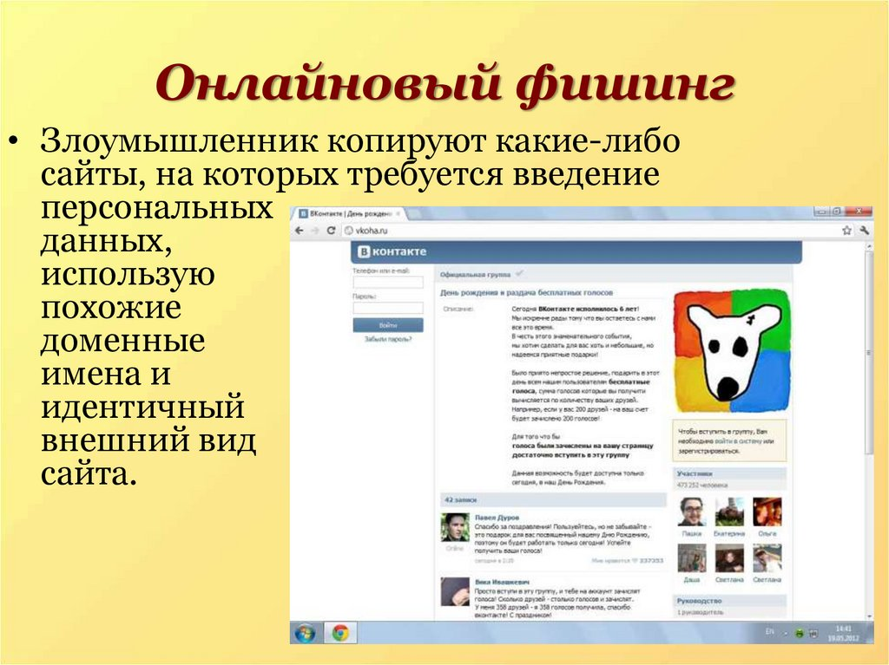
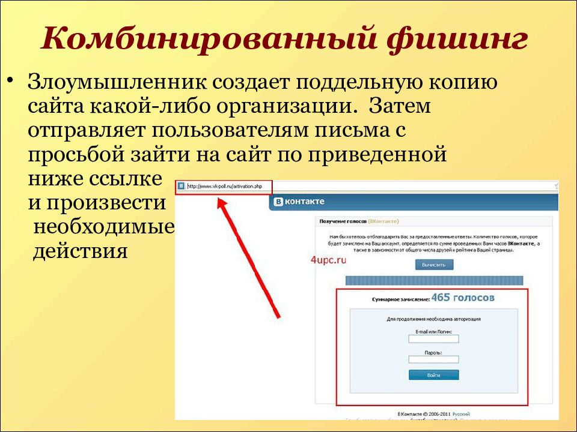

Разновидности фишинга

Сегодня можно выделить несколько основных видов фишинга: почтовый, онлайновый и комбинированный.
Первый вид подразумевает рассылку различных электронных сообщений. В них могут быть вложены «черви» или вирусы. Злоумышленники часто используют технологии, которые позволяют обходить спам-фильры, которые сегодня не гарантируют полноценную защиту. Кроме этого, получаемые сообщения могут принимать официальный вид и сбивать с толку получателей. Как уже упоминалось, может использоваться так называемая поддельная адресная строка.
Второй вид – онлайновый фишинг заключается в том, что мошенники достаточно качественно копируют наиболее популярные ресурсы (к примеру, интернет-магазины). Следующие шаги можно легко просчитать. Покупатель заходит на такую поддельную страничку и совершает покупку. При этом деньги уходят на счет мошенника.
Третий вид – комбинированный фишинг. Он сочетает в себе особенности двух вышеперечисленных способов обмана.




Смирнов Артем. 2022